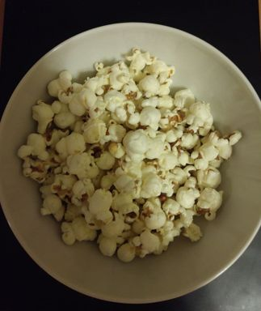

My Favourite Evening Snack
I know what you are thinking
I thought this was a programming blog, wtc is this? But hear me out!
Few weeks ago I saw a video by Matt D'Avella where he was talking a quick healthy snack and the part showed him putting a few dried corn kernels into a small vessel and after a few minutes, popcorn ready.
That intrigued me, to say the least.
I gave it a try and Yes, it's that simple.

A few things to keep in mind of course, so read on if it interests you.
Salted Popcorn
- Take a small iron pot. (Preferably with thich bottom)
- Add in some oil. (I used Olive Oil)
- Drop the kernels into the oil.
- Partially cover it with a lid.
- Wait for em to pop!
- Add in a bit salt (not too much!) and shake em around.
Movie Popcorn
Do you yearn for the popcorn we get at movies without the unhealthy side of it? Yes, you can make it at home.
- Take a small iron pot. (Preferably with thich bottom)
- Add in clarified butter. (Not normal butter) 3-6. Same as before.
Things to know
Why to partially cover the lid?
The kernels have some amount of moisture in them. By partially opening the lid, you let the water vapour out getting them crunchy.
Also the reason the kernels pop is because the moisture inside the kernels get super heated and need to vent out.
Why not normal butter?
If you heat normal butter for long, it starts burning. This is because of milk residue in the butter.
Also it has moisture in it causing popcorn to get soggy.
Don't use too much Oil!
If you add in too much oil, there is a chance the popcorn will get soggy (that was my experience).
Also the popcorn will smell & taste lot more of the oil used. While I love me some Olive Oil, too much on my popcorn feels weird.
Variation on Cooking Style
One variation I read online is to wait until the oil heats up sufficiently before putting in the kernels.
How do you know when the oil is ready? Put in a kernel or two at the start and wait for both of them to pop before you put in the rest.
Conclusion
So there you have it folks!
That's how I am now addicted to my evening popcorn.